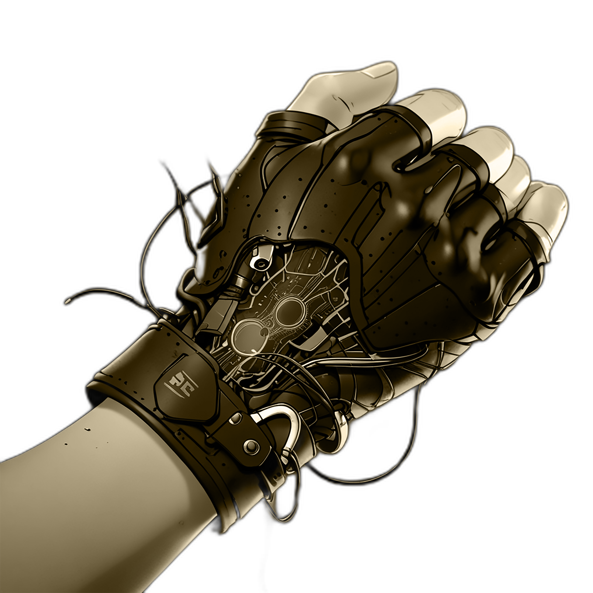
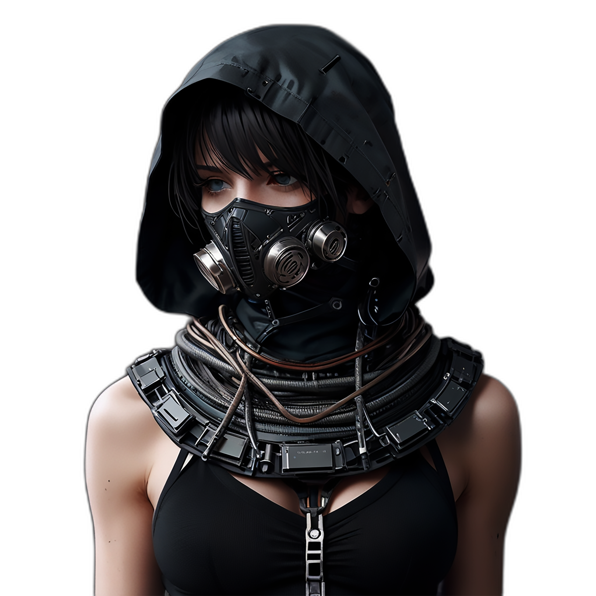
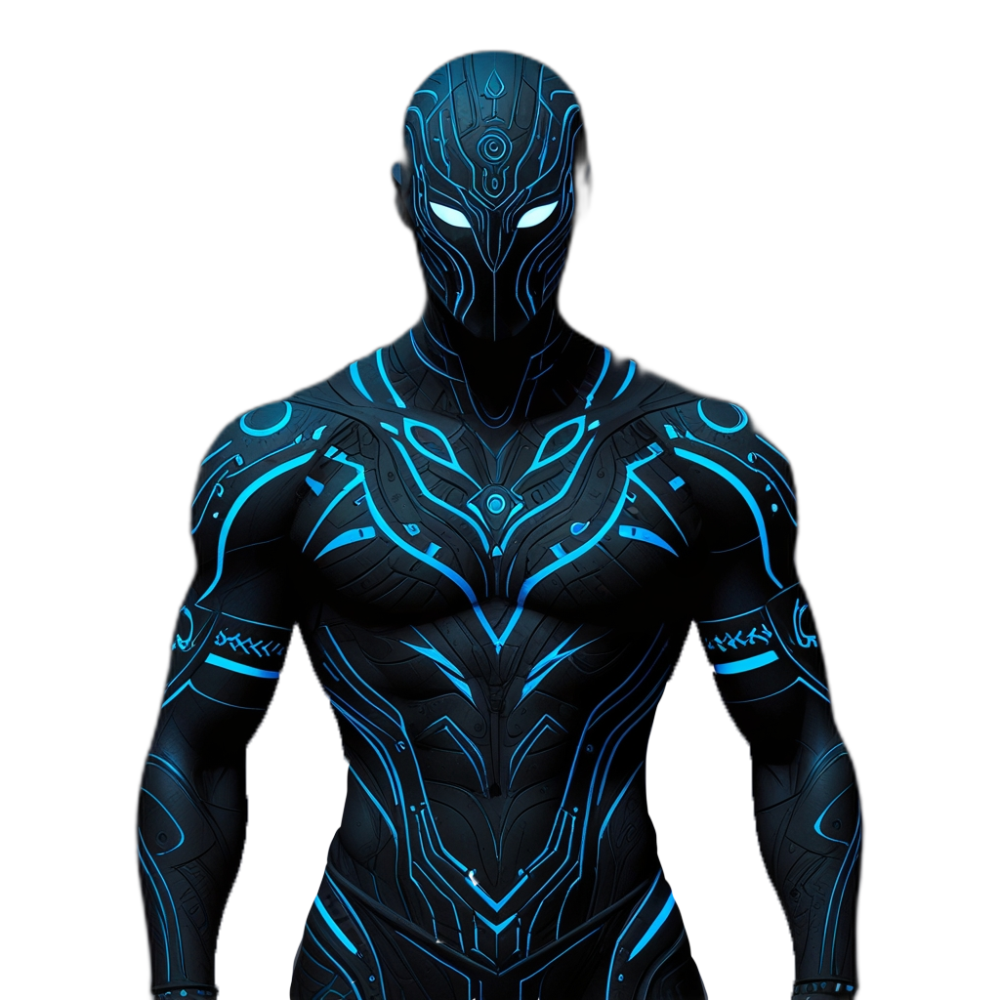

SOCIEDAD Y AMBIENTACION

Tecnología: Los Puros tienen trajes con tecnología integrada que detectan los cambios en el color de su herida y los proyectan en pantallas visibles

Accesorios: Usan collares o pulseras hechos a mano que simbolizan la resistencia a sus deseos insatisfechos. Sus prendas incluyen capuchas protectoras.

Accesorios: Pinturas corporales fluorescentes y trajes con elementos intercambiables que representan alianzas.